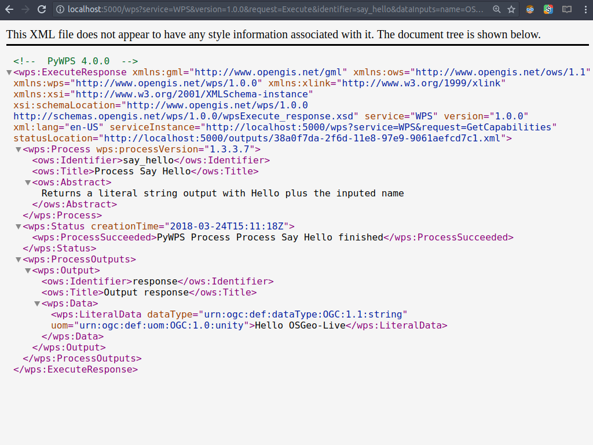

PyWPS gyorstalpaló¶
PyWPS is an OGC WPS (Web Processing Service 1.0.0) server implementation written in Python.
The PyWPS 4.0.0 library is installed by default on OSGeo-Live. This is a core library that is not intended to be executed directly, but rather to be used in the development of WPS services. An example service based on Flask is available at GitHub to facilitate a first contact with PyWPS.
Ez a gyorstalpaló leírja:
- A pywps-flask példa szolgáltatás telepítése és konfigurálása
- Hajtson végre
GetCapabilities,DescribeProcessésExecutekéréseket - Saját WPS feldolgozások fejlesztése
Contents
pywps-flask telepítés¶
Mivel a minta szolgáltatás a Flask-et használja, győződjön meg, hogy telepítették-e az OSGeoLive-ra:
sudo apt install python-flask
Majd klónozza a GitHub-ról a tárházat:
git clone https://github.com/geopython/pywps-flask.git
Mozogjon a tárház mappába és módosítsa a konfigurációs fájlt. Ezt megteheti a nano programmal:
nano pywps.cfg
Az egyetelen kritikus, ellenőrizendő dolog a napló adatbázis helye. A Pywps-flask gondoskodik egy minta adatbázisról, mely használható erre a célra. Győződjön meg róla, hogy a database beállítás így néz ki:
database=sqlite:////home/user/pywps-flask/logs/pywps-logs.sqlite3
Mentse a konfigurációs fájlt és lépen ki a nano-ból, most futtathatja a szolgáltatást:
python demo.py
Ha minden rendben megy egy ilyen üzenetet kap vissza:
* Running on http://127.0.0.1:5000/ (Press CTRL+C to quit)
Elérhető feldolgozások tesztelése¶
Open a web browser and point it to the address where the example service is listening: http://127.0.0.1:5000/ You will be presented with the following page:

Használja a zöld gombokat a szolgáltatás felfedezéséhez. Adjon ki egy GetCapabilities kérést a szolgáltatás áttekintéséhez; adjon ki egy DescribeProcess kérést egy adott projekt részleteinek megismeréséhez. Nézze meg a kérés URL-jét a böngésző cím sorában.
It az ideje, hogy az Execute kérést teszteljük. Megpróbálhatja a say_hello feldolgozást, mely egészen egyszerű. Irányítsa a böngészőjét a következő címre:
http://localhost:5000/wps?service=WPS&version=1.0.0&request=Execute&identifier=say_hello&dataInputs=name=OSGeo-Live
A feldolgozás egyszerűen visszaválaszol a „Hello OSGeo” üzenettel, egy szabványos WPS válasz dokumentumba ágyazva. A böngészőjének valami hasonlót kellene mutatnia:
{kind=link}
WPS feldolgozások fejlesztése¶
Egy új feldolgozás fejlesztéséhez csak egy új Python modult kell létrehoznia a processes mappában. Használja a meglévő feldolgozásokat sablonként a kódjának strukturálásához. Egy közelebbi pillantás a say_hello feldolgozásra megmutatja egy PyWPS feldolgozás főbb elemeit:
1. Import the necessary assets and create a class inheriting from the PyWPS Process class. In the constructor create the necessary objects for inputs and outputs:
from pywps import Process, LiteralInput, LiteralOutput, UOM
class SayHello(Process):
def __init__(self):
inputs = [LiteralInput('name', 'Input name', data_type='string')]
outputs = [LiteralOutput('response',
'Output response', data_type='string')]
- A szülő konstruktor hívása, a feldolgozás metaadatainak átadása:
super(SayHello, self).__init__(
self._handler,
identifier='say_hello',
title='Process Say Hello',
abstract='Returns a literal string output\
with Hello plus the inputed name',
version='1.3.3.7',
inputs=inputs,
outputs=outputs,
store_supported=True,
status_supported=True
)
A handler metódus létrehozása, melyet majd az Execute kérések kezelésére indítunk el. Használja a request és response objektumokat az input kinyerésére és az output beállítására.
def _handler(self, request, response):
response.outputs['response'].data = 'Hello ' + \
request.inputs['name'][0].data
response.outputs['response'].uom = UOM('unity')
return response
What’s next¶
PyWPS szabadságot és rugalmasságot biztosít, hogy saját Python folyamatokat írjon és ennek megfelelően kifejtse.
- Official documentation - For further information on PyWPS configuration and the API, consult the documentation on the PyWPS website.
- Tutorial - Try out the workshop, a tutorial used in workshops to introduce new users to PyWPS 4.
- Deployment to production - The pywps-flask service is just an example and not designed for production. One possible alternative is a Django based service, pywps-django. The documentation provides further details on how to set up a production service with Apache or nginx and Gunicorn.